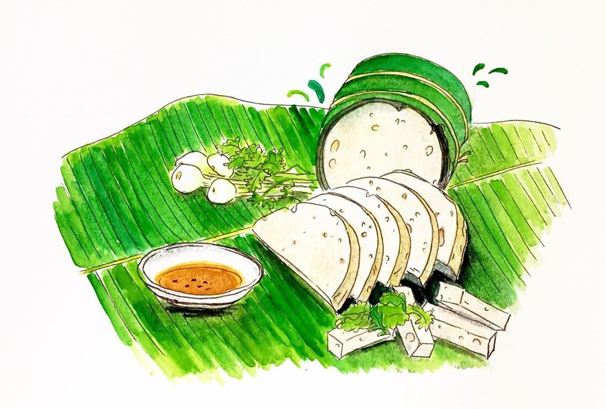

Linking Flavor to Every Bite
Delicious, consistent taste in every sausage they try. It highlights that each product is carefully made to deliver rich flavor, quality ingredients, and a satisfying experience every time they take a bite.

Linking Flavor to Every Bite
Delicious, consistent taste in every sausage they try. It highlights that each product is carefully made to deliver rich flavor, quality ingredients, and a satisfying experience every time they take a bite.



Our Story
Sausage Delights was born out of a passion for creating delicious, high-quality sausages that bring joy to every bite. Our journey began in a small kitchen, where we experimented with recipes and flavors to craft the perfect sausage. Today, we are proud to share our love for sausages with the world, offering a wide range of flavors that cater to every palate. At Sausage Delights, we believe that great food brings people together, and we are committed to delivering exceptional taste and quality in every product we create.